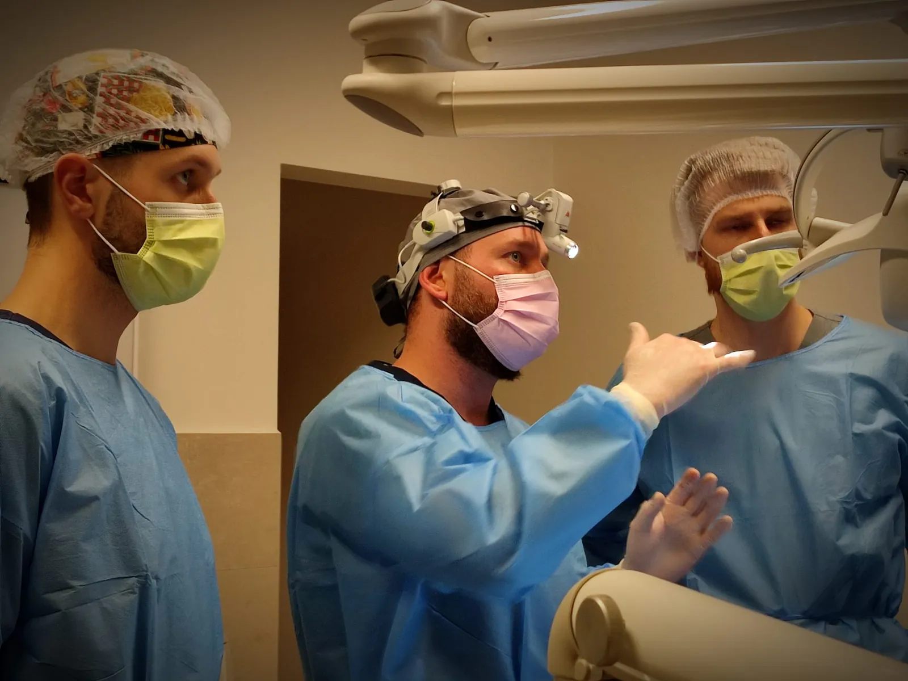
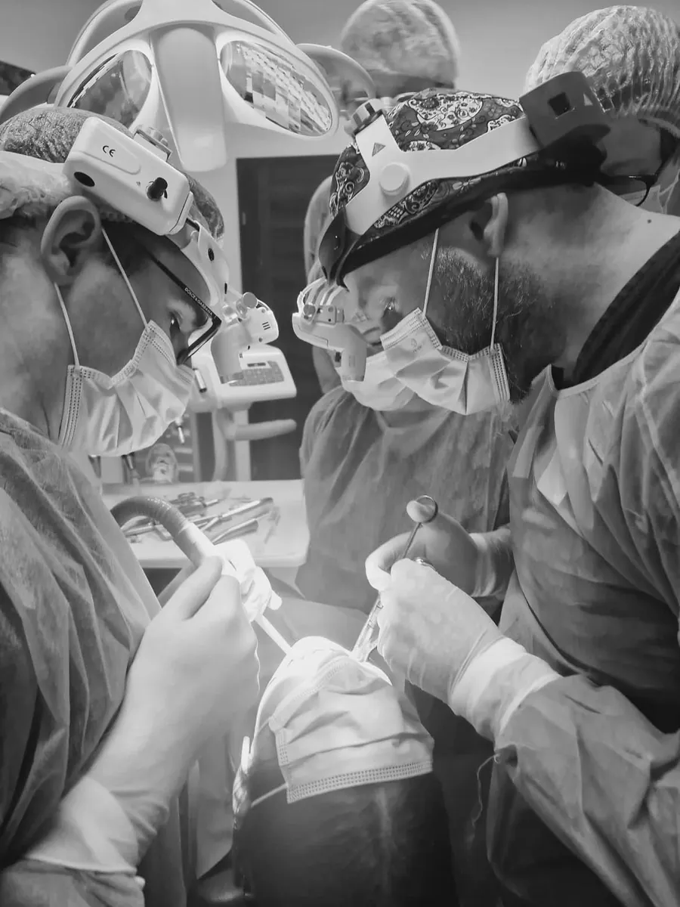
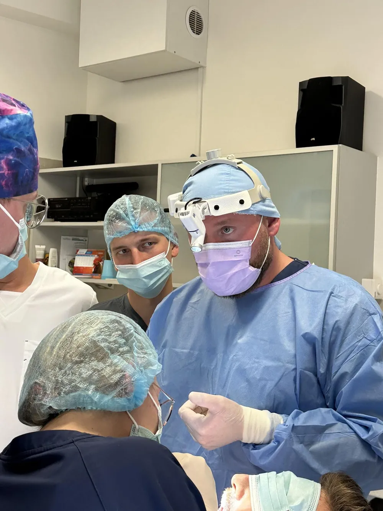
lek. dent. Jakub Białek, MSc
Implanty i chirurgia stomatologiczna od korzenia po koronę
Wszczepiam implanty, usuwam zęby zatrzymane i odbudowuję kość. Zabiegi wykonuję w Herbach k. Częstochowy i w gabinetach w Małopolsce.
O mnie
Master of Science in Oral Surgery, Implantology and Periodontology
Jestem lekarzem stomatologiem, absolwentem Collegium Medicum Uniwersytetu Jagiellońskiego w Krakowie. Zajmuję się chirurgią stomatologiczną i implantologią.
Zabiegi przeprowadzam w BIAŁEK STOMATOLOGIA w Herbach k. Częstochowy, pracuję na bloku operacyjnym Chirurgii Szczękowo-Twarzowej w szpitalu i współpracuję z gabinetami stomatologicznymi w województwie małopolskim.
- CM UJStudia lekarsko-dentystyczne, Collegium Medicum Uniwersytetu Jagiellońskiego w Krakowie
- 2017Początek pracy na bloku operacyjnym Chirurgii Szczękowo-Twarzowej
- 2020Pierwsze autorskie szkolenia z chirurgii dla lekarzy stomatologów w Herbach
- 2025Studia podyplomowe na Uniwersytecie UCAM Murcia w Hiszpanii, tytuł MSc
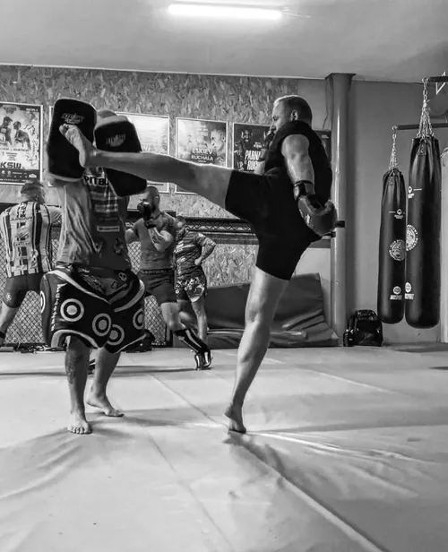
Prywatnie jestem szczęśliwym mężem, ojcem, pasjonatem sportów walki, kuchni oraz strzelectwa.
Zakres zabiegów
Implantologia i chirurgia jamy ustnej, także zabiegi, które w zwykłym gabinecie kończą się skierowaniem do chirurga.
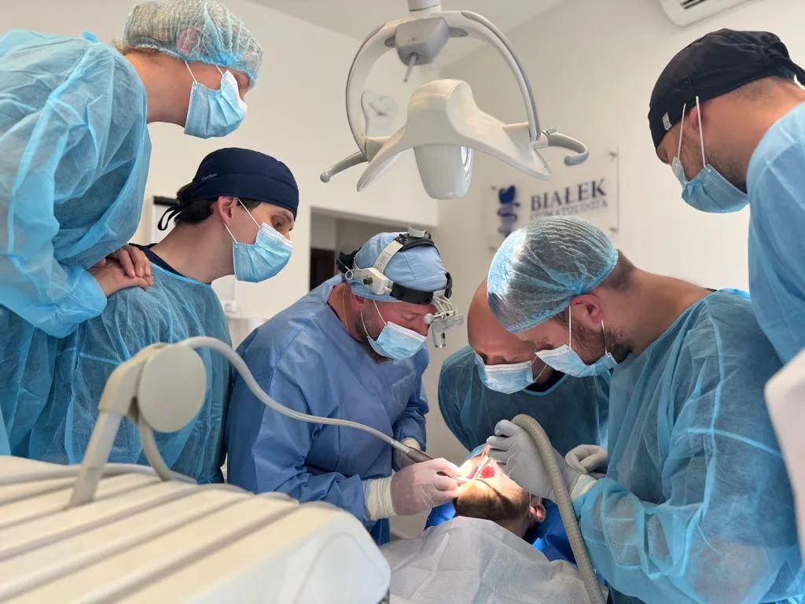
Implanty
Także implantacje natychmiastowe: implant wszczepiany na tym samym zabiegu, na którym usuwany jest ząb.
Regeneracja i przeszczepy kości
Materiały kościozastępcze renomowanych firm i przeszczepy kości własnej pacjenta, często z osoczem bogatopłytkowym PRF.
Podniesienie dna zatoki szczękowej
Sterowana regeneracja kości i tkanek miękkich przed implantacją w odcinku bocznym szczęki.
Zęby zatrzymane i trudne ekstrakcje
Chirurgiczne usuwanie zębów zatrzymanych, w tym ósemek, oraz ekstrakcje, które wymagają zabiegu chirurgicznego.
Resekcje wierzchołków korzeni
Zabieg ratujący ząb, gdy leczenie kanałowe nie wystarczyło.
Wyłuszczanie torbieli
Usunięcie zmiany wraz z jej torebką i zaopatrzenie miejsca po zabiegu.
Plastyka wędzidełek
Korekta zbyt krótkiego lub nisko przyczepionego wędzidełka wargi albo języka.
Chirurgiczne wydłużanie koron
Odsłonięcie zęba pod odbudowę protetyczną lub dla poprawy estetyki dziąsła.
Pojedyncza korona
Uzupełnia jeden brak między zębami, bez szlifowania zębów sąsiednich jak przy tradycyjnym moście.
Most na implantach
Zastępuje kilka zębów albo cały łuk zębowy i przywraca prawidłowe przeżuwanie.
Mocowanie protezy
Stabilizuje protezę na implantach, przywracając w dużym stopniu estetykę i funkcję żucia.
Implant krok po kroku
Implant zastępuje korzeń zęba, a dopiero na nim powstaje korona. Leczenie przebiega w tej samej kolejności.
Konsultacja
Rozmowa o zdrowiu, przebytych chorobach, lekach i nałogach. Potrzebne jest badanie tomografii CBCT, które pokazuje warunki do implantacji. Plan leczenia z kosztorysem przesyłam po konsultacji na e-mail.
Wszczepienie implantu
Implant umieszczany jest w kości mało urazową techniką chirurgiczną. Często na tym samym zabiegu wykonywana jest regeneracja kości, potrzebna do długiego utrzymania implantu.
Gojenie
Kość zrasta się z implantem (osteointegracja). Implant zostaje zamknięty pod dziąsłem, zależnie od ilości i jakości kości.
kilka do kilkunastu tygodniOdsłonięcie implantu
W znieczuleniu wkręcana jest śruba gojąca, która kształtuje dziąsło pod przyszłą koronę. Często robi się to od razu przy wszczepieniu, bez osobnego zabiegu.
Etap protetyczny
Skany cyfrowe lub wyciski na jednej wizycie, oddanie korony, mostu lub protezy na kolejnej.
ok. 2-4 tygodnie
Szkolenia dla lekarzy
Autorski kurs praktyczny „Chirurgiczne usuwanie zębów ósmych” w BIAŁEK STOMATOLOGIA, Herby k. Częstochowy, ul. Lubliniecka 23A.
- 50. edycja27.02.2027, sobota
- 51. edycja28.02.2027, niedziela
Ze względu na duże zainteresowanie prowadzę listę rezerwową. Osoby z listy dostają informację o nowych terminach dzień przed oficjalnym ogłoszeniem.
Zapisz się na listęDla pacjentów z zębami zatrzymanymi
Podczas kursów wykonuję zabiegi u pacjentów z zębami zatrzymanymi całkowicie lub częściowo. Kwalifikacja jest bezpłatna, potrzebne jest aktualne zdjęcie RTG panoramiczne (OPG), które można wykonać w gabinecie (100 zł).
Koszt zabiegu to 1/3 do 1/4 ceny regularnej. Operatorem jest zawsze dr Jakub Białek, lekarze kursanci asystują.
Kolejne edycje kursu w Herbach
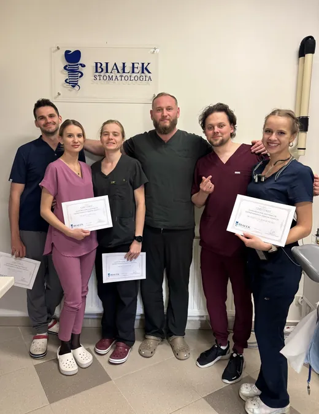
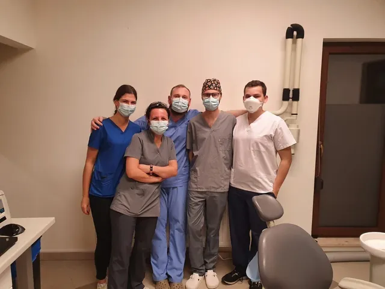
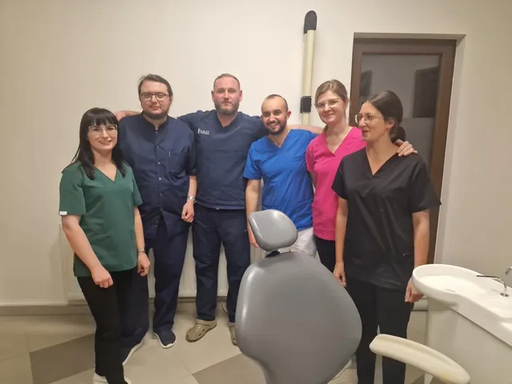
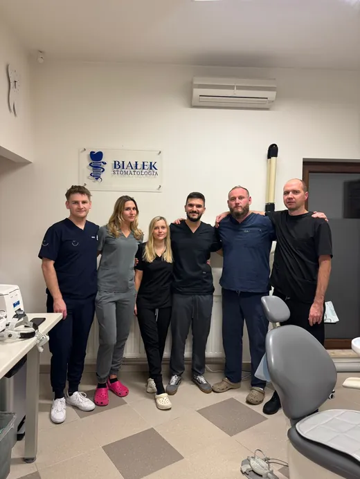
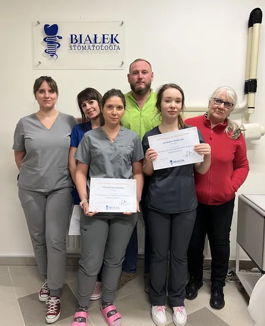
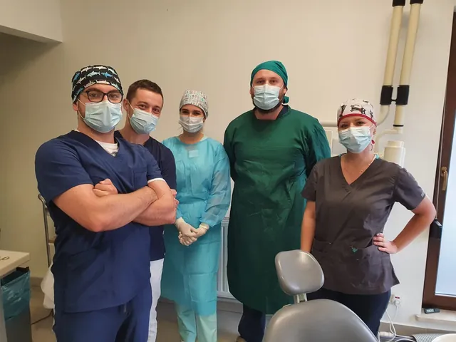
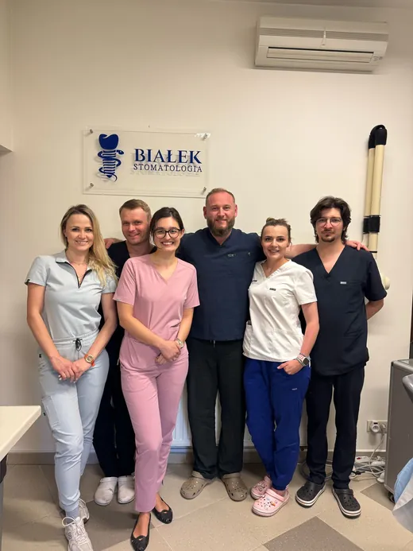
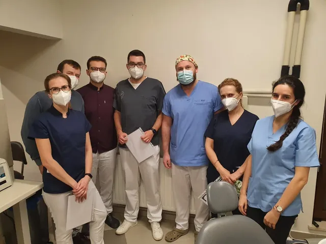
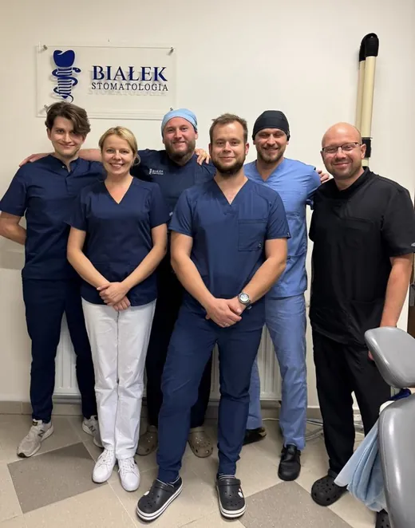
Ukończone kursy i konferencje
Chirurgia i implantologia
- Lateralizacja nerwu zębodołowego dolnego - lek. stom. Radosław Jadach, Wrocław 2026
- Odbudowa kości z zastosowaniem przeszczepów autogennych - dr n. med. Marek Adwent, Bielsko-Biała 2024
- Osteodensyfikacja - popraw jakość swoich zabiegów implantologicznych - lek. dent. Marcel Firlej, Kraków 2024
- Chirurgia plastyczna tkanek przyzębia. Zarządzanie tkanką miękką - lek. dent. Mariusz Bożan, Poznań 2023
- Chirurgia periodontologiczna i niechirurgiczne leczenie chorób przyzębia - lek. dent. Aneta Furtak, Kraków 2022
- Chirurgia tkanek twardych i implantologia - lek. dent. Mariusz Bożan, Kraków 2021
- Praktyczna Chirurgia Stomatologiczna cz. 2 - dr Radosław Jadach, dr n. med. Łukasz Zadrożny, Warszawa 2020
- Zaawansowane szkolenie implantoprotetyczne w systemie Alpha Bio Tec - Bartłomiej Klęsk, Wrocław 2020
- Procedury odbudowy kości szczęki i żuchwy z zastosowaniem różnych form kości allogennej - dr n. med. Krzysztof Awiżło, dr n. med. Maciej Dijakiewicz, Jachranka 2019
- Projektowanie płatów w resekcyjnej i rekonstrukcyjnej chirurgii jamy ustnej - dr Radosław Jadach, Kraków 2019
- Praca w pełnej nawigacji systemem Thommen Medical - kurs praktyczny - lek. dent. Łukasz Bańczyk, dr n. med. Daniel Ciapiński, Częstochowa 2019
- Zarządzanie tkankami miękkimi w zabiegach augmentacji pionowej - seminarium dr med. dent. Marius Steigmann, Kraków 2019
- Optymalizacja rekonstrukcji tkanek twardych i miękkich - seminarium dr Patrick Palacci, Kraków 2019
- Curriculum implantologiczne, kursy A, B, C i D - dr n. med. Sławomir Karwan, lek. stom. Michał i Tomasz Sypień, Bielsko-Biała 2018-2019
- Miniimplanty OBI w rozwiązaniach typu overdenture - lek. med. lek. dent. Rafał Radzewski, Częstochowa 2018
- Kurs podstawowy AIC OSSTEM - dr n. med. Paweł Głąbowski, Warszawa 2018
- PRF vs biomateriały - w którą stronę podążać? - lek. dent. Andrzej Gruślewski, Kraków 2018
- Mikrochirurgiczna resekcja wierzchołka korzenia - lek. stom. Witold Popowicz, Wrocław 2018
- Chirurgiczne usuwanie zębów zatrzymanych - dr n. med. Sławomir Karwan, Kraków 2017
- Podstawowy kurs chirurgiczny dla lekarzy niespecjalistów - lek. dent. Jacek Górecki, Warszawa 2017
Konferencje
- Kongres CAD-CAM - cyfrowa stomatologia, Warszawa 2026
- Konferencja implantologiczna Implasmile, Łódź 2025
- RegenDays - Osteoimmunologia, Kraków 2024
- IMPLANTY - Idea, Sztuka, Praktyka, Jachranka 2019 i 2021
- Najnowsze trendy w chirurgii stomatologicznej, Kraków 2019
- Od mikro do makro - plastyczna chirurgia perio, Kraków 2019
Medycyna estetyczna
- Powiększanie i korekta kształtu ust - lek. Urszula Brumer, Warszawa 2018
- Łączone techniki zastosowania toksyny botulinowej, kwasu hialuronowego, hydroksyapatytu wapnia i osocza bogatopłytkowego - lek. stom. Filip Kulewicz, Wrocław 2018
- Zastosowanie toksyny botulinowej i kwasu hialuronowego w gabinecie stomatologicznym - dr n. med. Paweł Głąbowski, Wrocław 2017
Gdzie się umówić
Na konsultację lub zabieg proszę umawiać się bezpośrednio w wybranym gabinecie.
BIAŁEK STOMATOLOGIA - Implantologia
Herby k. Częstochowy, ul. Lubliniecka 23a
Tu odbywają się też szkolenia dla lekarzy.
Zalecenia po zabiegu
Do przeczytania w domu, na spokojnie. W razie wątpliwości proszę dzwonić do gabinetu, w którym był zabieg.
Po zabiegu chirurgicznym (implantacja, chirurgiczne usunięcie zęba, resekcja, regeneracja kości)
- nie jeść i nie pić 2 godziny lub do ustąpienia znieczulenia; potem pokarmy ostudzone, dieta miękka, półpłynna
- nie gryźć pokarmu w okolicy operowanej
- antybiotyk i leki przeciwbólowe według zaleceń lekarza; probiotyk ENTEROL 1 g dziennie podczas antybiotykoterapii (łącznie 4 kapsułki w 2-4 dawkach)
- bezpośrednio po zabiegu chłodne okłady przez ręcznik na natłuszczoną skórę, z przerwami
- ślina zabarwiona krwią przez kilka godzin jest normalna; intensywny wyciek krwi wymaga kontaktu z lekarzem
- obrzęk jest największy w 2-3 dobie i utrzymuje się 3-5 dni; możliwe są krwiaki i pękanie kącików ust
- do wizyty kontrolnej bez wysiłku fizycznego, opalania, sauny i solarium
- nie palić i nie pić alkoholu przez 7 dni
- delikatnie szczotkować zęby z ominięciem miejsca operowanego; nie używać irygatora
- od 24 godzin po zabiegu delikatne płukanie płynem Eludril Classic (rozcieńczonym) lub Alfa Implant, 3 razy dziennie po 1 minucie, bez bulgotania
- spać z głową wyżej, na stronie przeciwnej do operowanej; nie odciągać policzka i warg
- zdjęcie szwów na wizycie kontrolnej
Po ekstrakcji zęba
Skrzep w zębodole to najlepszy opatrunek. Szary nalot jest fizjologiczną oznaką gojenia.
- opatrunek usunąć po 20 minutach
- nie jeść i nie pić 2 godziny, potem dieta chłodna, półpłynna
- przez minimum 24 godziny nie płukać jamy ustnej, nie palić, nie pić przez słomkę - wypadnięcie skrzepu grozi bolesnymi powikłaniami
- bez ciężkiej pracy fizycznej, dźwigania, opalania i sauny
- przy bólu paracetamol lub ibuprofen, nie leki z aspiryną; chłodne okłady na policzek z przerwami
- przedłużone krwawienie lub silny ból kilka dni po zabiegu - kontakt z lekarzem, który wykonywał zabieg
Po zamknięciu połączenia ustno-zatokowego lub podniesieniu dna zatoki
- antybiotyk według zaleceń lekarza, krople do nosa przez 5 dni
- nie wydmuchiwać nosa przez 7 dni, przy kichaniu otwierać usta
- nie schylać się, nie dźwigać, nie pić przez słomkę
- nie latać samolotem, nie nurkować, nie grać na instrumentach dętych
- dieta chłodna, półpłynna przez 2-3 dni, lekkostrawna
- nie palić i nie pić alkoholu przez 7 dni
- wizyta kontrolna i zdjęcie szwów po 14 dniach lub według zaleceń lekarza
Pełne zalecenia przekazuje lekarz po zabiegu.
Kontakt
W sprawie terminów konsultacji i zabiegów proszę dzwonić bezpośrednio do gabinetu. Pytania i szkolenia - mailowo.